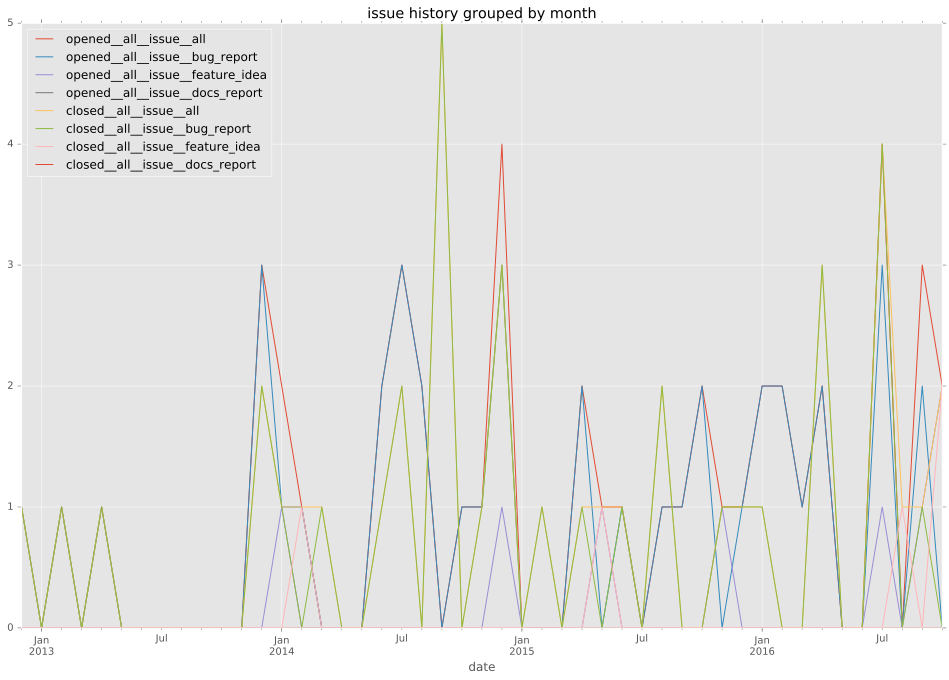
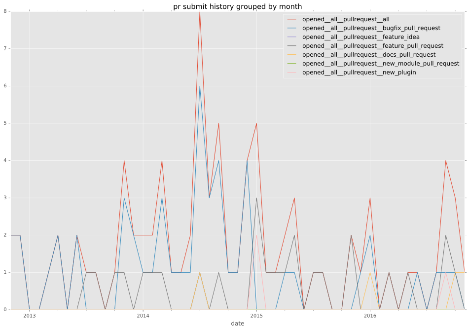
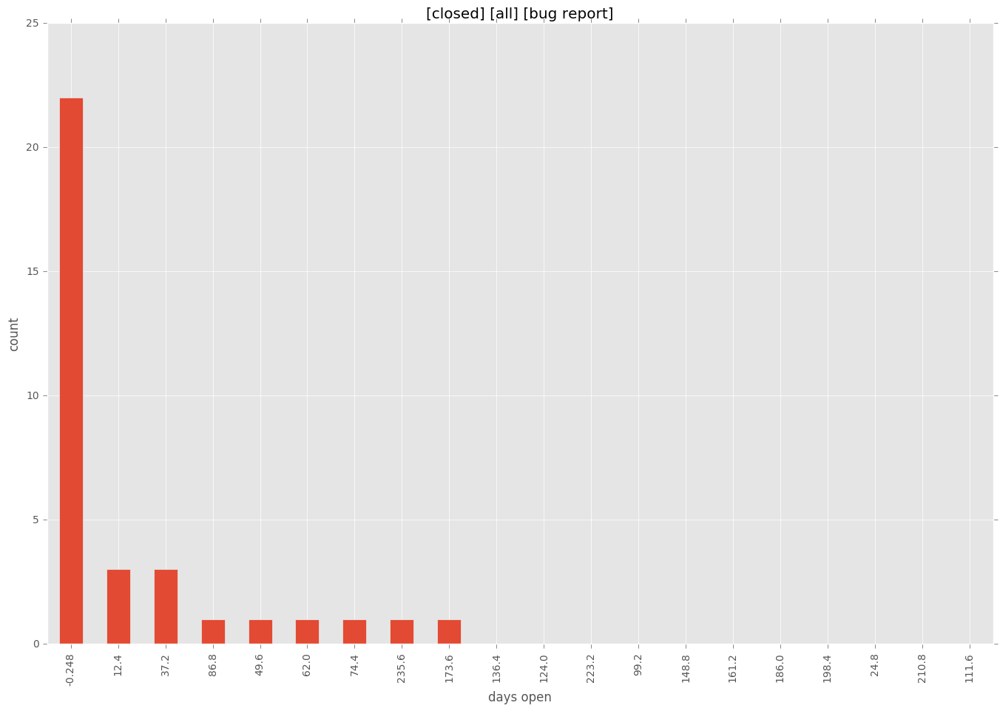

authors
- hnakamur
- saito-hideki
maintainers
- alikins
- saito-hideki
contributors
- indrajitr : 12 commits
- sinner- : 5 commits
- saito-hideki : 12 commits
- ercpe : 6 commits
- evgkrsk : 1 commits
- robinro : 1 commits
- abadger : 1 commits
- mgcrea : 3 commits
- mscherer : 22 commits
- dhml : 3 commits
- hnakamur : 59 commits
- Jmainguy : 13 commits
- bcoca : 2 commits
- jordidg : 2 commits
- rmarchei : 16 commits
- vlewin : 2 commits
- chriskarel : 2 commits
- jrobeson : 5 commits
- jctanner : 3 commits
- riccardomurri : 1 commits
- caphrim007 : 1 commits
total issue counts
unknown: 1
feature pull request: 25
docs report: 1
pullrequest: 75
docs pull request: 3
bugfix pull request: 44
feature idea: 10
issue: 47
bug report: 38
issue history

pullrequest history

days open by issue type
bugfix pull request
count: 66
std: 77.2964806492
min: 0
max: 616
median: 0.5
mean: 15.8484848485
all
count: 150
std: 89.080336263
min: 0
max: 616
median: 1.0
mean: 31.32
pullrequest
count: 0
std: nan
min: nan
max: nan
median: nan
mean: nan
docs pull request
count: 3
std: 3.46410161514
min: 6
max: 12
median: 6.0
mean: 8.0
docs report
count: 1
std: nan
min: 1
max: 1
median: 1.0
mean: 1.0
feature pull request
count: 38
std: 95.9558338423
min: 0
max: 366
median: 1.0
mean: 47.7894736842
feature idea
count: 5
std: 243.206291037
min: 7
max: 594
median: 71.0
mean: 165.4
issue
count: 0
std: nan
min: nan
max: nan
median: nan
mean: nan
bug report
count: 35
std: 53.4792349555
min: 0
max: 248
median: 4.0
mean: 26.9714285714
closures grouped by total days open
